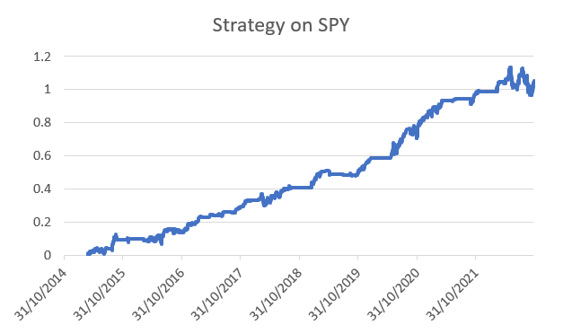
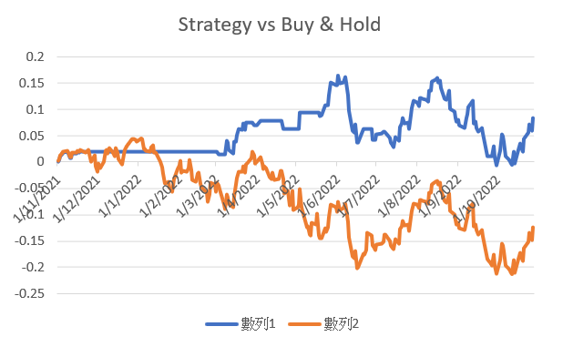

極多朋友表示近來投資組合大虧，無論美股或港股也一樣。不是為了馬後炮，而是說真的，過往寫了無數個方法讓大家避開大跌市。例如2021年7月寫的一篇Patreon，題為《一個避開美股大跌的量化指標》，當中就提到了一個策略，當時寫的目的只為了讓各位讀者可以避開大跌，甚至乎可以在跌市中獲利。
當中提到了SPY及IWM的差價，如果小股表現明顯差於大股，那市場便很脆弱，絕對不宜持有美股。
一年半時間過去，這個策略於這年半有用嗎？我們就來一起看看。
把策略放諸過去8年數據，總回報如下圖：

你會發現策略總回報達100%以上，不過重點不是回報，而是風險調整後回報 (risk adjusted return)，例如Sharpe ratio高達1.3。不要少看1.3的Sharpe，此時，沒有一個大型基金，或股票，或ETF可以做到Sharpe過1的表現！長揸美股的Sharpe只有0.6，即這個策略在同一風險底下，回報大於Buy and hold一倍以上！
再者，策略回撤極低，只有1成左右，但如果你長期持有美股，最大回撤已經是3-4成，即假設回報差不多，Calmar ratio大3倍左右。換言之，策略比Buy and hold好足足3倍。
策略可以避過過去一年的大跌嗎？
請看看圖二：

藍線為策略資產曲線；橙線為長揸資產曲線。過去一年，策略回報差不多賺1成，而Buy and hold則虧損1成以上，兩者相差二十多個百分點，即策略alpha超過20%。留意，策略完全沒有沽空成分，即不能從跌市中獲利，策略純粹避開跌浪，已能造出1成回報。
簡單說，這策略仍然有效，且完全幫大家避過跌浪；甚至於熊市中帶來盈利。
//
一如既往，顯示賺錢曲線不在於說我很利害，完全不是。回顧策略目的有三個：
1. 希望大家可以趕緊學習量化交易，學懂大戶如何買賣、如何投資，而非來用錯誤的方式炒賣。
2. 希望大家可以多看舊專欄，舊專欄寫下了無數極有效策略，不要再浪費。
3. 希望大家不要再輸錢給市場了。
//
後話：
有不少同行警告我不要再寫alpha出來了，因為再寫出來就像是這行的二五仔，嚴重影響buy side的利益。我也不知我會寫到何時，anyway，大家多看舊專欄，趕快學習量化就好了